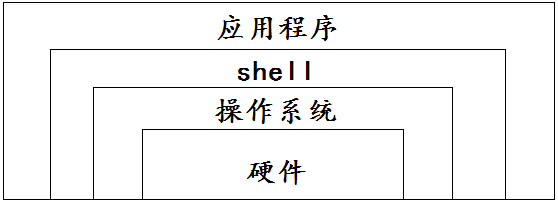
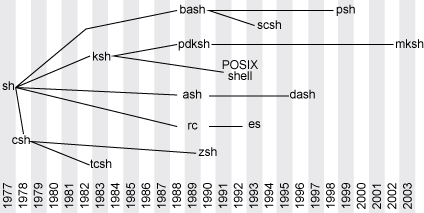

2 shell简介
既然我们是来学shell，首先第一个问题：shell是什么？
2.1 什么是shell
- shell的定义: 在计算机科学中，Shell就是一个命令解释器。
- shell是位于操作系统和应用程序之间，是他们二者最主要的接口，shell负责把应用程序的输入命令信息解释给操作系统，将操作系统指令处理后的结果解释给应用程序。
- shell位置图

总结：一句话，shell就是在操作系统和应用程序之间的一个命令翻译工具。
2.2 shell的分类
- 基本上shell分两大类：图形界面shell和命令行shell
- 图形界面shell:图形界面shell就是我们常说的桌面
- 命令行式shell
- windows系统: cmd.exe 命令提示字符
- linux系统: sh / csh / ksh / bash / ...
- 我们常说的shell是命令行式的shell,在工作中常用的是linux系统下的bash。

2.3 查看系统shell信息
- 查看当前系统的shell类型
echo $SHELL
- 查看当前系统环境支持的shell
[root@linux-node1 ~]# cat /etc/shells
/usr/bin/sh
/usr/bin/bash
/usr/sbin/nologin
2.4 shell 脚本
shell使用方式
- 手工方式:手工敲击键盘,在shell的命令行输入命令,按Enter后,执行通过键盘输入的命令,然后shell返回并显示命令执行的结果, 逐行输入命令、逐行进行确认执行
- 脚本方式: 就是说我们把手工执行的命令a，写到一个脚本文件b中，然后通过执行脚本b，达到执行命令a的效果.
shell脚本定义: 当可执行的Linux命令或语句不在命令行状态下执行，而是通过一个文件执行时，我们将这个文件为shell脚本。
2.5 shell脚本示例现在我们来使用脚本的方式来执行以下
- 创建临时shell脚本文件 itcast.sh, 注意以
.sh结尾#!/bin/bash # 这是临时shell脚本 echo 'nihao' echo 'itcast' - 脚本执行效果
[root@linux-node1 ~]# /bin/bash itcast.sh
nihao
itcast
2.6 shell与其他编程语言在工作中的简单比较
shell的优势
- 存在时间长，拥有较多积累
- 编写简单
- 对环境依赖小
shell的劣势
- 无法实现复杂功能
- 不支持现代编程语言的高级特性：面向对象等
小结:
- shell 是 命令解释器
- shell 两分类图形+命令行(bash)
- 脚本 是可执行命令的组合